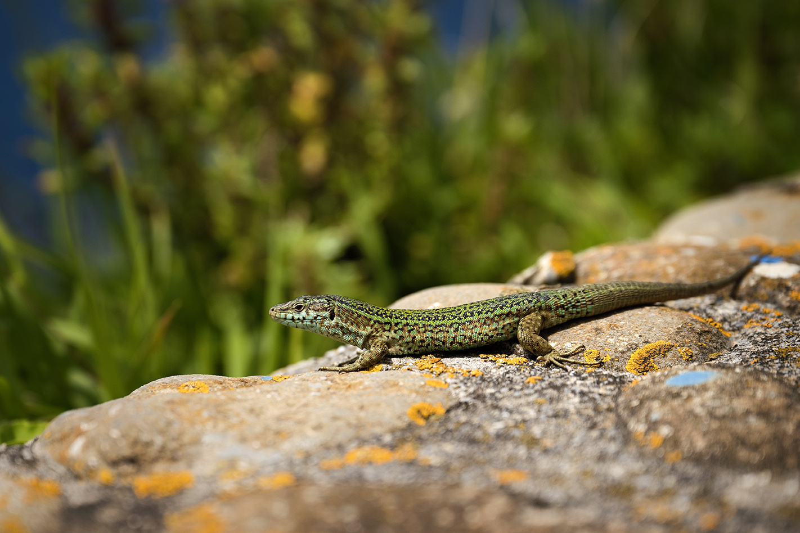

Au Nord de l'Espagne
À la croisée des chemins (2025)
Synopsis
Des montagnes verdoyantes du Pays basque aux puissantes vagues de la Costa da Morte en Galice, le nord de l’Espagne se distingue par la grande variété de ses paysages contrastés ainsi que par la richesse culturelle, historique et culinaire des régions qui le composent. Hôte de nombreuses routes menant vers Compostelle, cette partie du pays regorge d’attraits méconnus qui sauront plaire à plus d’un ! Plages idylliques, somptueux vignobles, mystérieuses grottes, désert emblématique et fascinants châteaux ne sont que quelques exemples qui attendent Mélissa, David et Noah dans l’aventure de ce 4e film de voyage qui les guidera vers des chemins imprévus…
Détails du projet
- Rôle : Réalisation, Caméra, Montage
- Année : 2025
- Durée : 93 minutes
- Diffuseur : Les Aventuriers Voyageurs